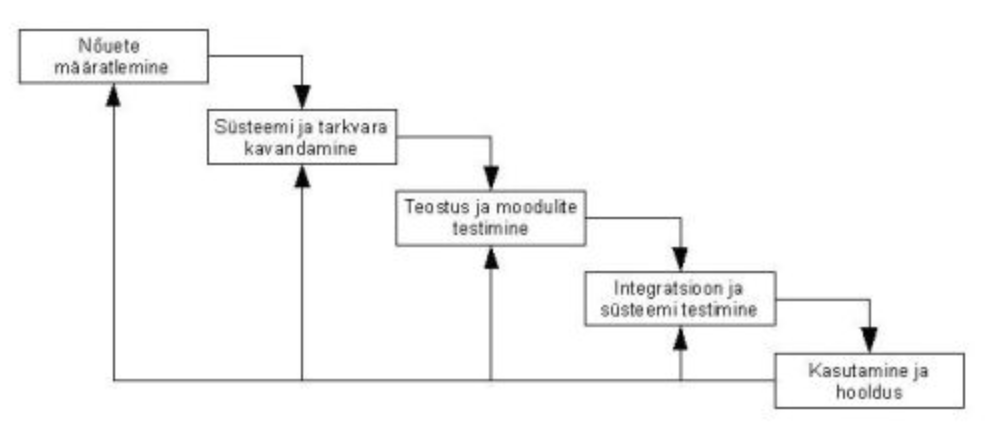

| Waterfall | Kirjeldus | Etappide täpsem kirjeldus | ||||||
| Arendustsykkel | Vastupidine agiilsele arendusele | N6uete m22ramine, systeemi tarkvara kavandamine, teostus moodulite testimine, integratsioon ja systeemi testimine, kasutamine ja hooldus |
| HEA | VEAD | ||
| Selge struktuur, kerge hallata, põhjalik dokumentatsioon, Sobiv hästi selgete nõuetega projektidele | Vähe paindlikkust, väike kasutaja tagasiside võimalus, sobimatu keerukatele ja muutuvatele projektidele, |
| Visuaalne joonis |  |